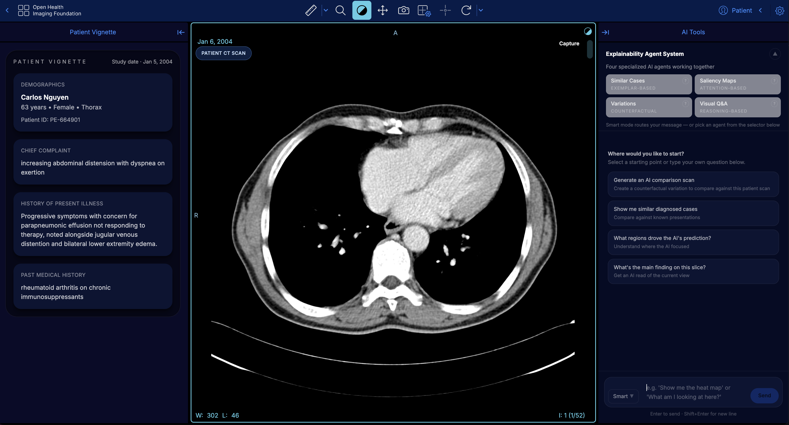

// collection
Explainable AI
Projects where interpretability and transparency are part of the actual work — not just the framing.

Research PaperAddressing the Selection Problem in XAI
A framework for choosing the right explanation for the right context.
 Language + Models
Language + Models
Newspeak Dictionary
A project about model behavior, framing, and the politics of meaning.
 Interpretability
Interpretability
Portraits of Algorithmic Attention
Making model attention legible through image-making.